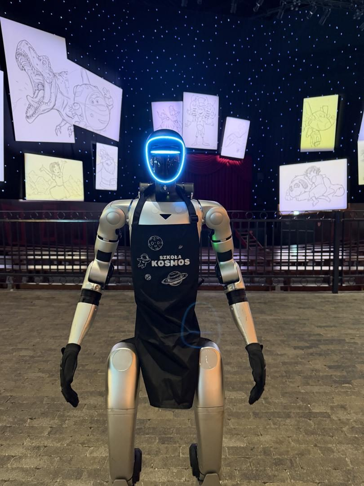

- Strona główna
- Blog
- Wynajem atrakcji na imprezy
Przewodnik eventowy · Atrakcje
Wynajem atrakcji na imprezy i eventy: co można wynająć, za ile i na co uważać
Dmuchańce, fotobudki, symulatory, kasyno, strefy dla dzieci, pokazy — wynajem atrakcji na imprezy to dziś osobna branża z własnymi cennikami i własnymi pułapkami w umowach. Co można wynająć, ile to kosztuje według publicznych ofert, co powinno być w cenie i jak nie zapłacić dwa razy za dojazd.

„Wynajem atrakcji na imprezy” to jedno z najczęściej wpisywanych w wyszukiwarkę haseł eventowych — i jedno z najmniej precyzyjnych. Pod tym samym hasłem kryją się wypożyczalnie dmuchańców, firmy od fotobudek, agencje eventowe z całym programem i pojedynczy artyści. Ten poradnik porządkuje temat: co można wynająć, ile to kosztuje według publicznych cenników (stan: październik 2026), co powinno być w cenie i jakie zapisy w umowie decydują o tym, czy impreza się uda.
Co można wynająć na imprezę lub event
Oferta wypożyczalni atrakcji dzieli się na kilka grup. Różnią się nie tylko ceną, ale tym, czy przyjeżdżają z obsługą i ile miejsca potrzebują.
- Atrakcje dmuchane. Zamki, zjeżdżalnie, tory przeszkód, bramki piłkarskie, sumo. Potrzebują prądu (dmuchawa), płaskiego podłoża i osoby pilnującej. Standardowa pozycja na festyn, piknik firmowy i urodziny dziecka.
- Fotobudki. Klasyczna z wydrukiem, lustro selfie, fotobudka 360, fotobudka AI. Przyjeżdżają z obsługą, potrzebują gniazdka i około 3×3 metrów.
- Symulatory i VR. Symulator wyścigowy, lotu, gogle VR z grą, byk rodeo, symulator surfingu. Jedna osoba naraz, więc na większy event bierze się kilka stanowisk.
- Kasyno i gry. Stoły do ruletki, blackjacka i pokera z krupierami; piłkarzyki, cymbergaj, automaty retro, gry wielkoformatowe (jenga, szachy, kręgle).
- Strefa dla dzieci. Animatorzy, kąciki zabaw, malowanie twarzy, bańki, warsztaty plastyczne. Na pikniku firmowym to atrakcja dla rodziców.
- Pokazy i artyści. Pokaz ognia, laserowy, barman show, iluzjonista, szczudlarze — to też „wynajem atrakcji”, choć bliżej mu do angażu artysty. Osobny poradnik: pokazy na event.
- Sprzęt i infrastruktura. Namioty, sceny, nagłośnienie, oświetlenie, agregaty, toalety, ogrzewacze. Bez tego plenerowa impreza nie działa, a w budżecie zapomina się o tym najczęściej.
- Technologia. Interaktywna podłoga, hologramy, ścianki LED, roboty. Robot humanoidalny jest tu wyjątkiem, bo wynajmuje się go jak występ, nie jak urządzenie — piszemy o tym niżej.
Cennik wynajmu atrakcji: ceny z publicznych ofert
Zebraliśmy kwoty z serwisów porównujących oferty wykonawców i z ogłoszeń. To wartości orientacyjne: sobota w czerwcu kosztuje więcej niż wtorek w marcu, a Warszawa więcej niż Zamość (w cenniku cateringu różnica wynosi ponad dwukrotność).
| Atrakcja | Cena orientacyjna | Co zwykle w cenie | Źródło |
|---|---|---|---|
| Dmuchaniec prosty | od ok. 150 zł/dzień | sam sprzęt; obsługa i prąd osobno | OLX, 2026 |
| Zestaw dmuchany ze zjeżdżalnią | 400–550 zł/dzień | sprzęt, często dowóz | OLX, 2026 |
| Fotobudka 360 | 1 100–1 400 zł za 2 h; 1 500–1 900 zł za 3 h; 2 000–2 800 zł za 4 h+ | obsługa, oświetlenie, gadżety, dojazd 50–100 km | cenauslug.pl, 2026 |
| Fotobudka klasyczna | 600–900 zł za 2 h; 900–1 300 zł za 4 h; kolejna godzina 150–280 zł | obsługa, wydruki, dojazd 15–40 km | kb.pl, 2023 |
| Mobilne kasyno | 1 400–2 500 zł za 3–5 h | stoły, krupierzy, żetony, transport i montaż | cenauslug.pl, 2026 |
| Animator dla dzieci | 550–1 400 zł, średnio 900 zł za 3–4 h | program, materiały; drugi animator powyżej 10–12 dzieci | cenauslug.pl, 2026 |
| Barman mobilny / barman show | średnio 1 806 zł; pokaz flair 2 000–8 000 zł | barman, sprzęt; alkohol i składniki często osobno | cenauslug.pl, 2026 |
| Iluzjonista | 1 600–4 666 zł, średnio 3 727 zł | pokaz 30 min–3 h; nagłośnienie sceny osobno | cenauslug.pl, 2026 |
| Wytwornica ciężkiego dymu | 1 008–1 200 zł | urządzenie z obsługą; koszt zależy od długości efektu | cenauslug.pl, 2026 |
| Pokaz sztucznych ogni | 8 464–11 600 zł, średnio ok. 10 000 zł | pokaz z obsługą pirotechniczną i zgodami | cenauslug.pl, 2026 |
| Robot humanoidalny 33bots | od 5 500 zł netto za pełny dzień; krótsze wejście taniej; −15% za każdy kolejny dzień | operator, transport, branding, ubezpieczenie OC, scenariusz | nasz cennik, 2026 |
Dla porównania: catering na imprezę firmową dla 50 osób kosztuje według tego samego serwisu średnio 220 zł od osoby, czyli 11 000 zł. Atrakcje są zwykle mniejszą częścią budżetu, niż się wydaje.
Co jest w cenie, a co nie
Dwie oferty za „1 200 zł za fotobudkę” mogą różnić się o kilkaset złotych na fakturze. Różnica siedzi w tym, co wykonawca rozumie przez cenę. Sprawdź osiem pozycji:
- Dojazd. Większość ofert zawiera dojazd w promieniu 30–100 km od siedziby. Każdy kilometr dalej kosztuje według publicznych ofert 1–2,50 zł, często liczony w obie strony. Impreza 150 km od wykonawcy to dodatkowe 150–300 zł (cenauslug.pl, 2026).
- Obsługa. Kto obsługuje atrakcję i przez ile godzin? Dmuchaniec bez opiekuna to ryzyko, fotobudka bez animatora to zepsuty wydruk.
- Montaż i demontaż. Czy czas montażu wlicza się w godziny wynajmu? Fotobudka potrzebuje 30–60 minut przed startem.
- Prąd i agregat. W plenerze gniazdka nie ma. Agregat jest w cenie, płatny osobno albo „zapewnia organizator” — każda wersja jest w porządku, jeśli jest zapisana.
- Materiały. Wydruki z fotobudki (limit czy bez limitu), płyn do dymu, składniki na drinki, nagrody w grach.
- Dodatkowa godzina. Ustalona z góry kosztuje według ofert 150–400 zł. Dobrana w trakcie imprezy potrafi kosztować 400–600 zł (cenauslug.pl, 2026). Zapisz stawkę w umowie, nawet jeśli nie planujesz przedłużać.
- Ubezpieczenie OC. Wykonawca powinien mieć polisę OC obejmującą jego działalność. Zapytaj wprost — przy dmuchańcach i pokazach to nie formalność.
- Kaucja i zaliczka. Wypożyczalnie sprzętu bez obsługi często biorą kaucję. Zaliczka 20–50% jest standardem u większości wykonawców; bez zaliczki pracują nieliczni (my pracujemy).
Na co uważać w umowie
Umowa na wynajem atrakcji nie musi być długa, ale musi odpowiadać na pytania, które zadaje sobie organizator w dniu imprezy o 17:55.
- Pogoda. Co się dzieje, gdy pada? Dmuchańce i pokaz ognia nie działają w ulewie. Dobra umowa określa, czy można przenieść termin, zmienić atrakcję na halową albo odwołać bez pełnej opłaty.
- Odwołanie. Do kiedy i za ile. Zwykle im bliżej terminu, tym większa część kwoty przepada.
- Wymagania techniczne na piśmie. Metry kwadratowe, prąd (ile kW), dojazd dla busa, czas montażu. Wykonawca, który nie potrafi tego podać, nie robił tego wiele razy.
- Atesty dmuchańców. Urządzenia dmuchane powinny mieć dokument potwierdzający zgodność z normą dla sprzętu tego typu oraz instrukcję kotwiczenia. Przy wietrze powyżej dopuszczalnego dmuchaniec musi zostać zamknięty — to zapis, który chroni organizatora.
- Co robi obsługa, a co organizator. Kto pilnuje kolejki, kto decyduje o przerwie, kto zbiera dzieci na końcu.
- Dodatkowa godzina i dojazd. Stawki liczbowo, nie „do uzgodnienia”.
- Faktura. Czy wykonawca wystawia fakturę VAT — dla firmy to warunek rozliczenia imprezy w kosztach.
Jedno zdanie, które warto wysłać każdemu wykonawcy
„Proszę o ofertę z wyszczególnieniem: cena za X godzin, cena dodatkowej godziny, dojazd do [miejscowość], obsługa, wymagania techniczne, OC, warunki odwołania.” Odpowiedź na to pytanie mówi o wykonawcy więcej niż jego strona internetowa.
Wynajem atrakcji na urodziny, festyn, kawalerski i wesele
Ta sama wypożyczalnia, inne potrzeby. Krótko o czterech najczęstszych okazjach poza eventem firmowym:
- Urodziny dziecka. Dmuchaniec, animator, bańki, malowanie twarzy. Zaplanuj 2–3 godziny atrakcji, nie więcej — dzieci się męczą.
- Urodziny dla dorosłych, 18, 40, 50. Fotobudka, kasyno, barman, karaoke, iluzjonista close-up. Coraz częściej jedna mocna atrakcja zamiast kilku: robot humanoidalny witający gości na 40. urodzinach jest zapamiętywany dłużej niż tort.
- Festyn i dni miasta. Skala: kilka dmuchańców, strefa sportowa, animatorzy, scena. Samorządy publikują koszty w BIP-ach, więc warto sprawdzić, co płacą sąsiednie gminy. Nasze doświadczenia z gminami: robot na festyn i dni gminy.
- Wieczór kawalerski i panieński. Symulatory, kasyno, barman show, gry. Wykonawcy liczą wieczory weekendowe drożej, więc rezerwuj wcześniej.
- Wesele. Fotobudka, ciężki dym do pierwszego tańca, fontanny iskier, animator dla dzieci gości. Kompletna lista: atrakcje na wesele.
Wypożyczalnia atrakcji czy agencja eventowa
Wypożyczalnia daje sprzęt i obsługę do jednej atrakcji; agencja układa program, koordynuje wykonawców i bierze za to marżę. Przy jednej–dwóch atrakcjach na imprezę firmową dla 50 osób wypożyczalnia wystarczy. Przy pikniku na 500 osób z dziesięcioma wykonawcami, sceną i agregatami koordynator oszczędza więcej, niż kosztuje — ktoś musi odebrać dziesięć telefonów o 7:00 rano w dniu imprezy.
Wersja pośrednia: jedna firma, która ma kilka atrakcji (fotobudka, kasyno, gry) i dowozi je jednym busem. Taniej niż trzech wykonawców, prościej niż agencja.
Robot humanoidalny: wynajem występu, nie sprzętu
Pytanie „ile kosztuje wynajem robota na dobę” pada często i pokazuje nieporozumienie. Robot humanoidalny nie jest urządzeniem, które stawia się w rogu sali i odbiera następnego dnia. Przyjeżdża z operatorem, ma przygotowany scenariusz, wgraną wiedzę o Twojej firmie i wydarzeniu, nosi Twoje logo. Wita gości, podaje rękę, rozmawia po polsku i w innych językach, pozuje do zdjęć i tańczy na scenie.
Dlatego rozliczamy występ: pełny dzień od 5 500 zł netto, krótsze wejście wyceniane indywidualnie i zawsze taniej, przy realizacjach wielodniowych każdy kolejny dzień tańszy o 15%. W cenie są operator, transport w całej Polsce, branding (koszulka z logo, kod QR) i ubezpieczenie OC. Nie bierzemy zaliczki ani kaucji; faktura po wydarzeniu. Pełny cennik: ile kosztuje wynajem robota humanoidalnego, oferta: wynajem robotów humanoidalnych.


Checklista przed podpisaniem
- Oferta z rozbiciem: godziny, dodatkowa godzina, dojazd, obsługa, materiały.
- Wymagania techniczne na piśmie: miejsce, prąd, dojazd, czas montażu.
- OC wykonawcy i atesty sprzętu (dmuchańce, pirotechnika).
- Plan na pogodę i warunki odwołania.
- Kto obsługuje, kto pilnuje, kto decyduje o przerwach.
- Faktura VAT i termin płatności; wysokość zaliczki lub jej brak.
- Zgody obiektu: ogień, dym, hałas, godziny montażu.
- Osoba kontaktowa po obu stronach z numerem telefonu na dzień imprezy.
Najczęstsze pytania
Od około 150 zł za prosty dmuchaniec na dzień (ogłoszenia, 2026) do kilku tysięcy za pokaz. Fotobudka 360 to 1 100–1 900 zł za 2–3 godziny, mobilne kasyno 1 400–2 500 zł, animator dla dzieci średnio 900 zł, iluzjonista średnio 3 727 zł (cenauslug.pl, 2026). Robot humanoidalny 33bots: od 5 500 zł netto za pełny dzień z operatorem, krótsze wejście taniej.
Transport w określonym promieniu, montaż i demontaż, obsługa (jeśli atrakcja jej wymaga), ubezpieczenie OC wykonawcy i materiały eksploatacyjne (wydruki, płyn do dymu, paliwo do agregatu). Zawsze zapytaj, ile kosztuje dodatkowa godzina i kilometr poza promieniem — to dwie pozycje, które najczęściej zaskakują na fakturze.
Na urodziny dziecka: dmuchaniec, animator, bańki, malowanie twarzy. Na urodziny dla dorosłych: fotobudka, kasyno, barman, karaoke, pokaz iluzji. Na 18. i 40. urodziny coraz częściej wynajmuje się jedną mocną atrakcję zamiast kilku małych — robot humanoidalny witający gości jest jedną z nich.
Zależy od atrakcji. Dmuchańce, fotobudki i kasyno zwykle przyjeżdżają z obsługą, prosty sprzęt (gry wielkoformatowe, piłkarzyki) często bez niej. W ofercie powinno być napisane wprost, kto obsługuje atrakcję, przez ile godzin i czy obsługa jest w cenie.
Robot nie jest sprzętem, który stawia się w rogu sali. Przyjeżdża z operatorem, ma przygotowany scenariusz i wiedzę o Twoim wydarzeniu, nosi Twoje logo. Rozliczasz występ, nie dobę wypożyczenia: pełny dzień od 5 500 zł netto, krótsze wejście taniej, bez zaliczki i kaucji, faktura po wydarzeniu.